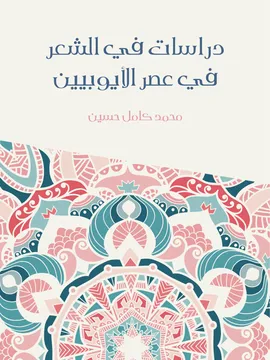

دراسات في الشعر في عصر الأيوبيين

قراءة عربية أصلية محددة النطاق في الصفحات 7، 8 من ملف PDF المرتبط، وليست تلخيصا كاملا للكتاب. نناقش ما تدعمه هذه المقاطع فقط.
حرب المذاهب بسلاح العلم
يفتتح المؤلف مقدمته: هذا الكتاب حلقة جديدة من سلسلة دراسات في أدب مصر الإسلامية، ولعل هذا العصر الذي سندرسه في هذا الكتاب من أهم العصور التي مرت على مصر، لا من الناحية السياسية فحسب، بل من الناحية الاجتماعية والثقافية والمذهبية؛ فقد خضعت مصر زهاء قرنين من الزمان للدولة الفاطمية، وهي الدولة التي اتخذت لها طابعًا دينيًا خاصًا وحاولت أن تصبغ مصر بهذا الطابع، ولا نعدو الحقيقة إذا قلنا إن بعض المصريين قد تطبع بطابع الفاطميين المذهبي، ولكن سرعان ما انقرضت هذه الدولة وقامت دولة أخرى حاربت هذا الطابع المذهبي وحاولت أن تعيد مصر إلى أهل السنة والجماعة. والظاهر أن الجهود التي بذلت في هذا السبيل كانت شاقة عنيفة في أول الأمر، ثم أدرك الأيوبيون ومن تبعهم من المماليك أن دعوة الفواطم كانت عن طريق العلم، فقام الأيوبيون والمماليك بمحاربة الدعوة الشيعية بنفس السلاح.
زاوية وحدود القراءة
قراءة في مطلع المقدمة (ص 7-8 من الملف)، ولا تدعي تلخيص دراسات الكتاب في شعر العصر الأيوبي.
الطبعة والقراءة
هذه النسخة من الكتاب صادرة ومتاحة مجانًا من مؤسسة هنداوي بشكل قانوني؛ حيث إن نص الكتاب يقع في نطاق الملكية العامة تبعًا لقوانين الملكية الفكرية.
تنزيل PDF المجاني ↓ القراءة والمصدر الرسمي ↗